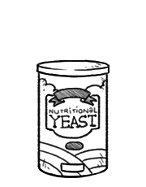

nutritional yeast
Nutritional yeast is a deactivated yeast, a strain of Saccharomyces cerevisiae. It is sold as yellow flakes or powder, and has a cheesy, nutty taste and flavor. Fortified nutritional yeast is a good source of vitamin B12.
Nutritional yeast is often confused with brewer’s yeast, but the two are distinct. Brewer’s yeast is aptly named, as it was initially offered as a byproduct of the beer brewing industry. It is a key ingredient in vegan cheese sauces, it can also be used as a condiment. Nutritional yeast adds a lot of depth and flavor to a variety of dishes.
Weight: 1/4 cup | 0.52 oz | 15 g